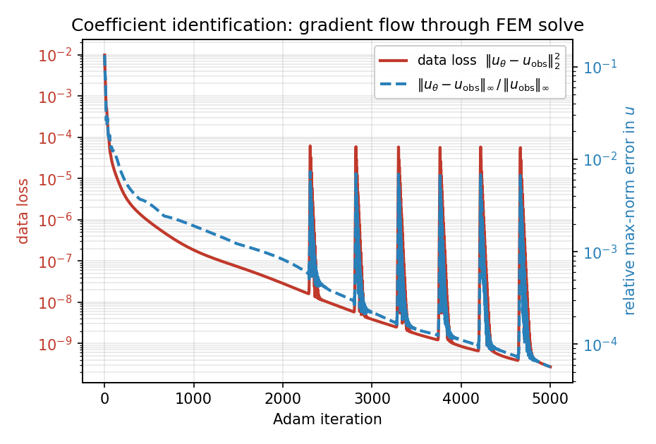
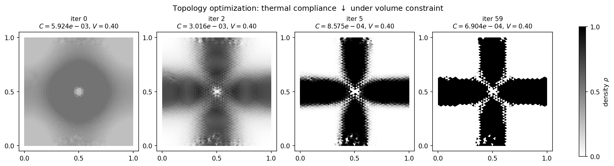

Differentiability¶
Every component along the
Mesh → Assembler → SparseMatrix → Condenser → Solve pipeline
is either a torch.nn.Module or a custom
torch.autograd.Function, and the linear solve at the end
has an analytic adjoint backward. As a result a loss computed
on the FEM solution can be back-propagated all the way to anything
that touched the pipeline: a coefficient at every node, a Dirichlet
value, or a neural network that parameterises the material
coefficient field — without writing a single line of sensitivity
code by hand.
This chapter explains how the gradient flow works, demonstrates it with two worked examples (parameter identification and density-based topology optimization), and lists the cost, correctness, and the few things that aren’t differentiable yet.
How it works¶
Three pieces of TensorMesh are wired into the autograd graph:
Meshextendstorch.nn.Module. Itspointsand per-node fields are tensors that can carryrequires_grad=True. Moving the mesh withmesh.to(device)and saving withstate_dictwork as you’d expect.ElementAssemblerandNodeAssemblerare themselvesnn.Modules. Any tensor that flows into aforward(...)integrand becomes a graph input to the assembled matrix or vector.tensormesh.sparse.SparseMatrix.solve()is inherited unchanged fromtorch_sla.SparseTensor(see Sparse Solvers), so the adjoint lives intorch-slarather than in TensorMesh. The forward solve produces \(u\) from \(A\,u = b\). For a scalar loss \(L(u)\), reverse-mode autograd hands the solve the upstream gradient \(\partial L/\partial u\); rather than differentiate through the solver’s internals, the solve is wrapped in atorch.autograd.Functionwhose custombackwardsolves a single adjoint system for the adjoint variable \(\boldsymbol{\lambda}\),\[A^{T}\, \boldsymbol{\lambda} \;=\; \frac{\partial L}{\partial u},\]and then assembles the input gradients in closed form — for each non-zero matrix entry \(\partial L / \partial A_{ij} = -\lambda_i\, u_j\), and for the right-hand side \(\partial L / \partial b = \boldsymbol{\lambda}\).
A call to loss = criterion(K.solve(b), target).sum() followed
by loss.backward() therefore gives correct gradients for every
leaf tensor that fed into K, b, or the loss — matrix
entries, source terms, prescribed boundary values, and any upstream
parameter (NN weights, design variables, …).
Adjoint cost¶
Back-propagation through one linear solve costs one additional
sparse solve (with the transposed system). For SPD problems
\(A^T = A\), so the backward uses the same factorisation or
preconditioner pattern as the forward. The total per-iteration
cost in a gradient-based optimiser is therefore roughly
2 × forward_solve_cost regardless of how many degrees of
freedom you have or how complex the assembly logic is.
Correctness check: autograd vs finite differences¶
Before trusting autograd on a serious inverse problem, it is worth spot-checking it against central finite differences. The script that produces the figures on this page contains a small check on a 35-node mesh; running it prints
[grad check] vs finite differences...
node autograd fd |diff|
32 -8.297026e-03 -8.297026e-03 8.05e-12
15 -5.268205e-04 -5.268205e-04 2.31e-12
37 -4.118132e-03 -4.118132e-03 1.04e-12
i.e. roughly 11 digits of agreement, which is what a float64 adjoint should give. The minor residual is the FD truncation error, not an autograd bug.
What’s differentiable, what isn’t¶
Differentiable through ``solve`` today:
Matrix entries (
edata) – gradients land on the upstream tensor whose values fed each non-zero.The right-hand side
b.Any tensor in
point_data/element_data/scalar_datapassed to an assembler – gradients flow through the integrand.Dirichlet values (via the condensed RHS contribution).
Backend caveats:
The
torch-slabackend="pytorch"andbackend="auto"paths are the safest defaults for autograd. They route the forward through a pure-PyTorch iterative solver and use the analytic adjoint for backward.The SciPy / Eigen / cuDSS / CuPy backends are wrapped by the same custom
torch.autograd.Function, so gradients still flow – but the forward computation lives in NumPy / CuPy / C++ and detaches from the graph for that span. This is correct for the linear solve but means you cannot “see into” the solver from autograd.The legacy fallback paths in
tensormesh.sparse(used whentorch-slais not installed) implement the same customautograd.Functionwith adjoint backward, so gradients work there too.
When in doubt for a research workflow involving autodiff, install
torch-sla and stick with backend="auto".
Worked example 1: coefficient-field identification¶
Suppose we observe a “ground truth” Poisson solution and want to recover the unknown coefficient field \(\kappa(x)\) at every mesh node by gradient descent:
The forward map is “FEM-solve given \(\kappa\)”; the loss is the L² distance between the FEM solution and the observation; autograd supplies the gradient and Adam updates \(\kappa\). We parametrise \(\kappa = 1 + \tanh\theta\) so \(\kappa\) stays in \((0, 2)\) – strictly positive, hence the FEM matrix is SPD on every iteration – with \(\theta\) unconstrained.
import torch
from tensormesh import Mesh, ElementAssembler, NodeAssembler, Condenser
device = "cuda" if torch.cuda.is_available() else "cpu"
mesh = Mesh.gen_rectangle(chara_length=0.04).to(device)
cond = Condenser(mesh.boundary_mask)
class WeightedLaplace(ElementAssembler):
def forward(self, gradu, gradv, kappa):
return kappa * (gradu @ gradv)
class Source(NodeAssembler):
def forward(self, v, f):
return v * f
def fem_solve(kappa, f_vals):
K = WeightedLaplace.from_mesh(mesh)(point_data={"kappa": kappa}).double()
b = Source.from_mesh(mesh)(point_data={"f": f_vals}).double()
K_, b_ = cond(K, b)
return cond.recover(K_.solve(b_))
# Synthetic ground-truth data.
pts = mesh.points
x, y = pts[:, 0], pts[:, 1]
kappa_true = 1.0 + 0.6 * torch.sin(2 * torch.pi * x) * torch.cos(2 * torch.pi * y)
f_vals = torch.ones(mesh.n_points, dtype=torch.float64, device=device)
with torch.no_grad():
u_obs = fem_solve(kappa_true, f_vals)
# Recover kappa from u_obs by Adam.
theta = torch.zeros(mesh.n_points, dtype=torch.float64,
device=device, requires_grad=True)
optim = torch.optim.Adam([theta], lr=3e-2)
for step in range(5000):
optim.zero_grad()
kappa = 1.0 + torch.tanh(theta)
u = fem_solve(kappa, f_vals)
loss = ((u - u_obs) ** 2).sum()
loss.backward()
optim.step()
Over 5000 iterations the data loss drops by more than seven orders of magnitude and the max-norm observation error bottoms out near \(6 \times 10^{-5}\):
{kind=link}

Fig. 16 Adam optimisation history over 5000 steps: the data loss \(\|u_\theta - u_{\rm obs}\|_2^2\) falls from \(10^{-2}\) to \(\sim 3 \times 10^{-10}\) (the periodic spikes are Adam overshooting, recovered within a few steps), and the relative max-norm error in \(u\) reaches \(\sim 6 \times 10^{-5}\).¶
The recovered coefficient field:

Fig. 17 Ground truth \(\kappa(x)\) (left), the field recovered after 5000 Adam steps (middle), and the absolute error (right). The four-lobe checkerboard is now recovered across the whole domain; only a faint residual remains at the centre (absolute error peaking near \(0.08\) there, under \(0.01\) over the rest of the domain), where the solution gradient is small.¶
The only visible residual is a faint blob at the centre. There the constant source makes \(\nabla u\) vanish, so the flux \(\kappa\,\nabla u\) carries almost no information about \(\kappa\) and that region is recovered slowest – a smoothness penalty on \(\theta\) removes it, left as an exercise.
The whole gradient computation goes through the WeightedLaplace
assembler and the linear solve via the adjoint backward – you
never write a sensitivity equation by hand.
Worked example 2: thermal-compliance topology optimization¶
For density-based topology optimization (compliance minimisation
under a volume constraint), TensorMesh ships a dedicated
OCOptimizer that implements the
classical Optimality Criteria update. Here we apply it to a
thermal problem on \([0,1]^2\): a Gaussian heat source in the
centre, cold sinks at the boundary, density \(\rho \in [0,1]\)
per element, SIMP conductivity
\(\kappa(\rho) = \kappa_{\min} + (1 - \kappa_{\min})\,\rho^{p}\),
and a hard volume cap \(\bar{\rho} \leq V = 0.4\).
import torch
from tensormesh import Mesh, ElementAssembler, NodeAssembler, Condenser
from tensormesh.optimizer import OCOptimizer
mesh = Mesh.gen_rectangle(chara_length=0.025).to(device)
cond = Condenser(mesh.boundary_mask)
elements = mesh.cells["triangle"]
n_elem = elements.shape[0]
class SIMPLaplace(ElementAssembler):
def forward(self, gradu, gradv, kappa):
return kappa * (gradu @ gradv)
class Source(NodeAssembler):
def forward(self, v, f):
return v * f
# Localised heat source.
x, y = mesh.points[:, 0], mesh.points[:, 1]
sigma = 0.08
f_field = torch.exp(-((x - 0.5) ** 2 + (y - 0.5) ** 2) / (2 * sigma ** 2))
V, p_simp, kmin = 0.4, 3.0, 1e-3
rho = torch.full((n_elem,), V, dtype=torch.float64,
device=device, requires_grad=True)
optim = OCOptimizer(rho, vf=V, move_limit=0.15)
def fem_solve(rho):
kappa = kmin + (1.0 - kmin) * rho ** p_simp
K = SIMPLaplace.from_mesh(mesh)(element_data={"kappa": kappa}).double()
b = Source.from_mesh(mesh)(point_data={"f": f_field}).double()
K_, b_ = cond(K, b)
return cond.recover(K_.solve(b_)), b
for step in range(60):
optim.zero_grad()
u, b = fem_solve(rho)
compliance = (b * u).sum() # J = b^T u
compliance.backward() # autograd populates rho.grad
optim.step() # OC update + bisection
Compliance drops from \(5.9 \times 10^{-3}\) (uniform grey plate) to \(6.9 \times 10^{-4}\) – nearly an order of magnitude – while the volume constraint \(\bar{\rho} = 0.4\) is held exactly throughout. The optimal layout is a “thermal cross” connecting the hot source in the centre to the cold sinks at the four mid-edges:
{kind=link}

Fig. 18 Density evolution over 60 OC steps. Iteration 0 is the uniform \(\rho = V = 0.4\) start; by iteration 5 the cross shape has emerged; iteration 59 is the converged design. Compliance drops by \(\sim 8.6\times\); the volume fraction is held at \(0.4\) exactly.¶
The OC step uses the gradient just computed by autograd —
tensormesh.optimizer.OCOptimizer.step() reads rho.grad,
finds the Lagrange multiplier by bisection, and applies the
density update with a move limit. No finite differences, no
hand-coded adjoint.
Wiring a neural network in¶
Three patterns cover the common ML/PDE couplings:
NN predicts a coefficient field. The NN ingests coordinates (or features derived from them) and outputs a per-node value — feed the output to an assembler via
point_data={"kappa": nn_out}. Gradients flow from the FEM loss back through the NN.NN predicts boundary values. Pass the output as
dirichlet_valueto a freshly-builtCondenser. The condensation contribution to the RHS keeps the gradients connected.NN predicts per-element stiffness modifiers. Stack the output into a per-element tensor and pass it via
element_data={"alpha": nn_out}; let the assembler’sforwarduse it inside the integrand.
In all three the NN is a regular nn.Module and the FEM
pipeline is a regular sequence of nn.Module calls; standard
torch.optim optimisers work without any special hooks.
Note
Wiring a network in needs no TensorMesh-specific neural-network
layer – a plain torch.nn.Module is enough, as above. Today
tensormesh.nn ships only the container utilities BufferDict
and BufferList (used internally to register tensors as module
buffers), not learnable layers. Higher-level neural-operator and
learnable-PDE building blocks are planned for a future release; until
then, build the network side with ordinary torch.nn layers.
Reproducing the figures¶
The two examples above, together with the FD gradient check, are generated by a single script:
python docs/scripts/differentiability_figures.py
It uses only the public API. The 5000-step identification loop now
dominates the runtime – a few minutes either way (~3 min on a GPU) –
after which it writes param_id_loss.png, param_id_fields.png,
and topology_thermal.png to
docs/source/_static/user_guide/differentiability/.
What’s next¶
Sparse Solvers – the autograd-aware solver behind
SparseMatrix.solve.Batched Workflows – back-propagate through a batched pipeline for ML training-data generation.
Time Integration – transient adjoints work too, with one adjoint solve per time step.
API Reference – the
solveautograd function and theOCOptimizerreference.